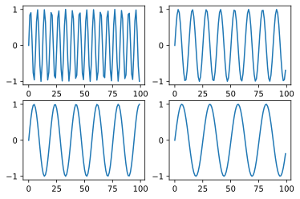

テンソルと画像処理
1 この章で学ぶこと
- numpy配列でモノクロ画像の描画
- matplotlibの使い方
- numpy配列でカラー画像の描画
- numpy配列で画像を自在に操り，フォトショップの機能を一部実装
章末には100本ノックがある.
2 行列と画像
1画素8ビットのカラーチャンネルは，numpy配列の多次元行列として表現することが可能である.
2.1 背景一色の画像
Code
3 直線を引く
Code
Code
3.1 斜めの線
境界 + 適当な幅のデータをプロットする。
Code
fig = plt.figure(figsize = (12, 6))
for i, width in enumerate([.5, 1]):
img = np.full((M, N), 255, dtype = np.uint8)
# mesh_gridのようなイメージ
# img.shape点を作成している
y_ind, x_ind = np.indices(img.shape)
ax = fig.add_subplot(1, 2, i + 1)
# 境界からの距離を求めて（横幅）その点をプロット
mask = np.abs(x_ind - 300 / 250 * (y_ind -50)) <= width
img[mask] = 0
ax.imshow(img, cmap = "gray", vmin = 0, vmax = 255)
plt.show()array([[[ 0, 0, 0, ..., 0, 0, 0],
[ 1, 1, 1, ..., 1, 1, 1],
[ 2, 2, 2, ..., 2, 2, 2],
...,
[297, 297, 297, ..., 297, 297, 297],
[298, 298, 298, ..., 298, 298, 298],
[299, 299, 299, ..., 299, 299, 299]],
[[ 0, 1, 2, ..., 397, 398, 399],
[ 0, 1, 2, ..., 397, 398, 399],
[ 0, 1, 2, ..., 397, 398, 399],
...,
[ 0, 1, 2, ..., 397, 398, 399],
[ 0, 1, 2, ..., 397, 398, 399],
[ 0, 1, 2, ..., 397, 398, 399]]])4 matplotlibでの複数グラフの書き方
fig.gcaはget current axesの略であり，axesを取得する際に使うことが可能である. fig.get_axesはfigureの中にどのaxesがあるのかを見ることが可能である.
4.1 複数のaxes
Code

4.2 画像をプロット
Code
0
25
51
76
102
127
153
178
204
5 市松模様を作る
Code
alist = [25, 50, 100]
fig = plt.figure(figsize = (16, 8))
for l, a in enumerate(alist):
img = np.zeros((330, 430), dtype = np.uint8)
for i in range(int(np.ceil(img.shape[0] / a))):
for j in range(int(np.ceil(img.shape[1] / a))):
if (i + j) % 2 == 1:
# numpy配列は要素数を超えても問題がない！！！！
img[i * a:(i + 1) * a, j * a:(j + 1) * a] = 255
ax = fig.add_subplot(1, 3, l + 1)
ax.imshow(img, cmap = "gray", vmin = 0, vmax = 255)6 グラデーション
Code
start_color = 50
end_color = 255
fig = plt.figure(figsize = (14, 8))
# 横方向
img = np.zeros((300, 400), np.uint8)
for i in range(img.shape[0]):
img[i,:] = np.linspace(start_color, end_color, img.shape[1], dtype = img.dtype)
ax = plt.subplot(1, 2, 1)
ax.imshow(img, cmap = "gray", vmin = 0, vmax = 255)
# 縦方向
img = np.zeros((300, 400), np.uint8)
for i in range(img.shape[1]):
img[:, i] = np.linspace(start_color, end_color, img.shape[0], dtype = img.dtype)
ax = plt.subplot(1, 2, 2)
ax.imshow(img, cmap = "gray", vmin = 0, vmax = 255)
<matplotlib.image.AxesImage at 0x251e5ca92b0>
ブロードキャストを使った特殊な書き方.
Code
start_color = 50
end_color = 255
fig = plt.figure(figsize=(14, 8))
img_shape = (300, 400)# 横方向
img = np.broadcast_to(np.linspace(start_color,end_color, img.shape[1], dtype=np.uint8)[None, :], img_shape)
ax = plt.subplot(1, 2, 1)
ax.imshow(img, cmap="gray", vmin=0, vmax=255)# 縦方向
img = np.broadcast_to(np.linspace(start_color,end_color, img.shape[0], dtype=np.uint8)[:,None], img_shape)
ax = plt.subplot(1, 2, 2)
ax.imshow(img, cmap="gray", vmin=0, vmax=255)
plt.show()次の部分が本質なのかと思うけど，内容的にはブロードキャストを明示的に実行しているということなのかと思う。その際に，ブロードキャストの対象の形状をブロードキャストする先の形状に合わせていることがわかる.
Code
array([[ 50, 50, 51, ..., 253, 254, 255],
[ 50, 50, 51, ..., 253, 254, 255],
[ 50, 50, 51, ..., 253, 254, 255],
...,
[ 50, 50, 51, ..., 253, 254, 255],
[ 50, 50, 51, ..., 253, 254, 255],
[ 50, 50, 51, ..., 253, 254, 255]], dtype=uint8)6.1 斜めのグラデーション
図書を見てもらうとわかるように，斜めのグラデーションを作るには，線形補間の応用で大丈夫である。線形補間の式は同じであるが，行により横軸が変わっていくイメージである。
Code
start_color = 0
end_color = 255
fig = plt.figure(figsize = (14, 8))
img1 = np.zeros((300, 400), dtype = np.uint8)
img2 = np.zeros_like(img1)
for i in range(img.shape[0]):
left = start_color + (end_color - start_color) * i / img.shape[0] / 2
right = (end_color + start_color) / 2 + (end_color - start_color) * i / img.shape[0] / 2
img1[i,:] = np.linspace(left, right, img1.shape[1])
img2[i, :] = np.linspace(left, right, img2.shape[1])[::-1]
ax = fig.add_subplot(1, 2, 1)
ax.imshow(img1, cmap = "gray", vmin = 0, vmax = 255)
ax = fig.add_subplot(1, 2, 2)
ax.imshow(img2, cmap = "gray", vmin = 0, vmax = 255)
plt.show()
7 円の描画
Code
7.1 円の境界に色を付ける.
8 弾の描画
9 極座標
Code
9.1 レムニスケート
10 カラー画像の作り方
Code
(300, 400, 3)あるいは,
Code
11 カラー画像での矩形塗りつぶし
12 テキストの描画
Code
from PIL import Image, ImageDraw, ImageFont
with Image.new("RGB", (400, 300), color=(255, 255,255)) as canvas:
draw = ImageDraw.Draw(canvas)
font =ImageFont.truetype("numpy_book/fonts/M_PLUS_1p/MPLUS1p-Bold.ttf", 38)
draw.text((30, 30), "こしあんは美味しい", font=font, fill=0)
plt.imshow(canvas)
plt.show()
text_array = np.array(canvas)
print(text_array.dtype, text_array.shape)uint8 (300, 400, 3)12.1 テキスト画像のトリミング
Code
text_points = np.where(text_array[:, :, 0] == 0) # 白か黑かしかないのでR=0で判定
text_area = [np.min(text_points[0]),np.min(text_points[1]), np.max(text_points[0]),np.max(text_points[1])]
print(text_area) # [40, 35, 73, 367]
text_array_trimmed =text_array[text_area[0]:text_area[2]+1,text_area[1]:text_area[3]+1, :] # 終端に+1をする
plt.imshow(text_array_trimmed)
plt.show()[40, 35, 73, 367]
12.2 テキストへのグラデーション
Code
gradients = np.empty_like(text_array_trimmed)# (R,G,B) = (255, 51, 51) -> (51, 51, 255)への縦グラデーション
gradients[:,:,0] = np.linspace(255, 51,gradients.shape[1], dtype=np.uint8)[None, :]
gradients[:,:,1] = 51
gradients[:,:,2] = np.linspace(51, 255,gradients.shape[1], dtype=np.uint8)[None, :]
plt.imshow(gradients)
plt.show()# テキストのレイヤーマスク
layer_mask = (text_array_trimmed[:,:,0] ==0).astype(np.uint8)[:, :, None]# グラデーションをテキストに乗せる
output = text_array_trimmed * (1-layer_mask) + gradients * layer_mask
plt.imshow(output)
plt.show()13 PillowとNumPy配列の相互変換
13.1 Pillow -> NumPyへの変換
Code
(960, 1280, 3) uint8<matplotlib.image.AxesImage at 0x251e5f68e50>
13.2 NumPy配列 ⇒ Pillowの変換
14 演習問題
14.1 Q1:べた塗りグレースケール
Code
14.2 Q2:四角形のぬりつぶし

14.3 画像の保存
14.4 円の塗りつぶし
14.5 Q5:平方数の直線
Code
W, H = 640, 480
img = np.full((W, H), 255, dtype = np.uint8)
N = np.ceil(np.sqrt(H))
width = .5
for i in range(1, int(N)-1):
oy, ox = i ** 2, i ** 2
oyn, oxn = (i + 1) ** 2, (i + 1) ** 2
idy, idx = np.indices((oxn - ox, oyn - oy))
xhat = (oxn - ox) / (oyn - oy) * idy + ox
mask = np.abs(xhat - (ox + idx)) <= width
img[oy:oyn, ox:oxn] = 255 * np.logical_not(mask)
fig, ax = plt.subplots(1, 1)
ax.set_aspect("equal")
ax.imshow(img, cmap = "gray", vmin = 0, vmax = 255)<matplotlib.image.AxesImage at 0x251e83e4ac0>
14.6 Q6:斜めの線
Code
<matplotlib.image.AxesImage at 0x251e70fcfd0>
array([[ 0, 1, 2, ..., 637, 638, 639],
[ 0, 1, 2, ..., 637, 638, 639],
[ 0, 1, 2, ..., 637, 638, 639],
...,
[ 0, 1, 2, ..., 637, 638, 639],
[ 0, 1, 2, ..., 637, 638, 639],
[ 0, 1, 2, ..., 637, 638, 639]])14.7 Q7:同心円
Code
W, H = 640, 480
img = np.full((H, W), 255, dtype = np.uint8)
idy, idx = np.indices(img.shape)
ox, oy = (320, 240)
r_seq = range(50, 351, 50)
lwd = 0.5
dist = (idy - oy) ** 2 + (idx - ox) ** 2
for r in r_seq:
mask = np.logical_and(dist >= (r-lwd)**2, dist <= (r+lwd)**2)
img[mask] = 0
plt.imshow(img, cmap = "gray", vmin = 0, vmax = 255)<matplotlib.image.AxesImage at 0x251e7186220>
14.8 Q8:アンチエイリアス
Code
W, H = 640, 480
img = np.full((H, W), 255, dtype = np.uint8)
idy, idx = np.indices(img.shape)
ox, oy = (320, 240)
r_seq = range(50, 351, 50)
lwd = 0.5
dist = (idy - oy) ** 2 + (idx - ox) ** 2
for r in r_seq:
# 2段階で処理を行う
# 少し広い範囲を灰色に塗り
# 通常の範囲を黒で塗りつぶす
mask = np.logical_and(dist >= (r-1)**2, dist <= (r+1)**2)
img[mask] = 128
mask = np.logical_and(dist >= (r-.5)**2, dist <= (r+.5)**2)
img[mask] = 0
plt.imshow(img, cmap = "gray", vmin = 0, vmax = 255)<matplotlib.image.AxesImage at 0x251e71d94f0>
14.9 Q9:スーパー楕円
Code
W, H = 640, 480
ox, oy = W // 2, H // 2
img = np.full((H, W), 255, dtype = np.uint8)
idy, idx = np.indices(img.shape)
M = np.linspace(.5, 2, 15)
a = 280
b = 200
for i, m in enumerate(M):
z = np.abs((idx - ox) / a) ** m + np.abs((idy - oy) / b) ** m
mask = np.logical_and(z >= 0.995, z <= 1.005)
img[mask] = 0
plt.imshow(img, cmap = "gray", vmin = 0, vmax = 255)<matplotlib.image.AxesImage at 0x251e728f760>
14.10 Q10:カージオイド
Code
W, H = 640, 480
ox, oy = 320, 240
img = np.full((H, W), 255, dtype = np.uint8)
idy, idx = np.indices(img.shape)
a = 150
c = 192
theta = np.arctan2(idy-oy, idx-ox)
r = a * (1 + np.cos(theta))
d2 = (idy - oy) ** 2 + (idx - ox) ** 2
mask = (d2 - r ** 2) <= 0
img[mask] = c
plt.imshow(img, cmap = "gray", vmin = 0, vmax = 255)<matplotlib.image.AxesImage at 0x251e5dc6370>
14.11 Q11:円周率の近似値
Code
100 3.1812 -0.03960734641020691
200 3.1606 -0.01900734641020696
500 3.149376 -0.007783346410207059
1000 3.145544 -0.003951346410207002
2000 3.143585 -0.0019923464102067356
5000 3.14238688 -0.0007942264102069885
10000 3.14199048 -0.00039782641020691414.12 Q12:積分の数値計算
Code
a_seq = [100, 200, 500, 1000, 2000, 5000]
true = 3 / 8
grid_size = 10000
idy, idx = np.indices((grid_size, grid_size))
z = np.abs(idy - grid_size / 2) ** (2 / 3) + np.abs(idx - grid_size / 2) ** (2 / 3)
fig = plt.figure(figsize = (12, 12))
for i, a in enumerate(a_seq, start = 1):
img = np.full((grid_size, grid_size), 255)
mask = z <= a ** (2 / 3)
img[mask] = 128
print(a, "snorm = ", np.sum(mask) / np.pi / a / a)
if a == a_seq[-1]:
ax = fig.add_subplot(1, 1, 1)
ax.imshow(img, cmap = "gray", vmin = 0, vmax = 255)100 snorm = 0.3750008769131238
200 snorm = 0.37497700367166004
500 snorm = 0.37503652762037637
1000 snorm = 0.37502920649299415
2000 snorm = 0.3750070043784328
5000 snorm = 0.3750010678990554614.13 Q13:オウム貝の螺旋
Code
W, H = 640, 480
img = np.full((H, W), 255, dtype = np.uint8)
idy, idx = np.indices(img.shape)
d2 = (idy - H // 2) ** 2 + (idx - W // 2) ** 2
thetas = np.arctan2(idy - H // 2, idx - W // 2)
offsets = 2 * np.pi * np.arange(10)
for offset in offsets:
r = 2 ** ((offset + thetas) / 7)
lower2 = (r - .5) ** 2
upper2 = (r + .5) ** 2
mask = np.logical_and(d2 >= lower2, d2 <= upper2)
img[mask] = 0
gray_show(img)Code
img = np.full((480, 640), 255, dtype=np.uint8)
y_ind, x_ind = np.indices(img.shape)
x_ind, y_ind = x_ind - 320, y_ind - 240
r, theta = np.sqrt(x_ind**2 + y_ind**2), np.arctan2(y_ind, x_ind)
for i in range(10):
v = 2 ** ((theta + 2 * i * np.pi) / 7)
# ここの-vってなんだっけ・・・・
mask = np.logical_and(v>=r-v-0.5, v<=r-v+0.5)
img[mask] = 0
plt.imshow(img, cmap="gray", vmin=0, vmax=255)<matplotlib.image.AxesImage at 0x251e5d15b50>
Code
array([0.])14.14 Q14：グラデーション（１）
14.15 Q14:グラデーション（２）
Code
W, H = 600, 600
img = np.full((W, H), 255, dtype = np.uint8)
oy, ox = H // 2, W //2
idy, idx = np.indices(img.shape)
idy, idx = idy - oy, idx - ox
v = idy ** 2 + idx ** 2
white = v[10, 300]
black = v[300, 300]
v = 255 * (v - black ) / (white - black)
v = np.clip(v, 0, 255)
img[...] = v
gray_show(img)
14.16 Q16:三角形の描画
Code
W, H = 600, 600
img = np.full((W, H), 255, dtype = np.uint8)
oy, ox = 0, 0
idy, idx = np.indices(img.shape)
idy, idx = idy - oy, idx - ox
fig = plt.figure()
mask1 = idy - (- 2 * idx + 600) >= 0
img1 = img.copy()
img1[mask1] = 192
ax1 = fig.add_subplot(1, 2, 1)
ax1.imshow(img1, cmap = "gray", vmin = 0, vmax = 255)
mask2 = idy - (2 * idx - 600) >= 0
img2 = img.copy()
img2[mask2] = 192
ax2 = fig.add_subplot(1, 2, 2)
ax2.imshow(img2, cmap = "gray", vmin = 0, vmax = 255)
<matplotlib.image.AxesImage at 0x251e5f8d1c0>
14.17 Q17：三角形の描画

14.18 Q18:三角形の重心
14.19 Q19:任意図形の重心
Code
292.2499105593379 421.6434334534775
14.20 Q20:カラー画像

14.21 Q21:イタリアの国旗
Code
W, H, C = 600, 400, 3
img = np.full((H, W, C), 0, dtype = np.uint8)
img[:, :201] = np.array([0, 98, 33], dtype = np.uint8)[None, None, :]
img[:, 201:401] = np.array([255, 255, 255], dtype = np.uint8)[None, None, :]
img[:, 401:] = np.array([223, 0, 36], dtype = np.uint8)[None, None, :]
plt.imshow(img)<matplotlib.image.AxesImage at 0x251e5d97b80>
14.22 Q22：3階テンソルの乱数
カラー画像は３次元なので３階テンソルと呼ばれる。
14.23 Q23:ホワイトノイズ
[[237.60024439 180.59405009 120.8702287 ]
[162.67990876 175.14638539 171.29191215]
[ 95.22278728 124.35894627 206.65675962]
...
[220.32574568 190.07987688 52.46673445]
[222.74616695 110.07846665 166.04163626]
[176.47022485 98.69550035 199.21641395]]
[[237 180 120]
[162 175 171]
[ 95 124 206]
...
[220 190 52]
[222 110 166]
[176 98 199]]
14.24 Q24:３階テンソルのconcatenate
Code
(256, 128, 3)Code
(128, 256, 3)Code
(128, 128, 6)Code
(128, 128, 13)14.25 Q25:３階テンソルのstack
(2, 6, 8, 128)14.26 Q26:縦方向の画像の結合
Code
<matplotlib.image.AxesImage at 0x251e7174a60>

14.27 Q27：横方向の画像の結合

14.28 Q28:日の丸

14.29 Q29：Z旗
Code
W = 1500
H = W * 2 // 3
slope = H / W
img = np.full((H, W, 3), 255, dtype = np.uint8)
white = np.array([255, 255, 255])
yellow = np.array([255, 255, 0])
blue = np.array([0, 0, 255])
red = np.array([194, 31, 1])
black = np.array([0, 0, 0])
idy, idx = np.indices((H, W))
mask1 = idy - (slope * idx) <= 0
mask2 = idy - (H - slope * idx) <= 0
img[np.logical_and(mask1, mask2), :] = yellow[None, None, :]
img[np.logical_and(mask1, np.logical_not(mask2)), :] = blue[None, None, :]
img[np.logical_and(np.logical_not(mask1), mask2), :] = black[None, None, :]
img[np.logical_and(np.logical_not(mask1), np.logical_not(mask2)), :] = red[None, None, :]
plt.imshow(img)<matplotlib.image.AxesImage at 0x25180f6ed90>
14.30 Q30：セーシャルの国旗
Code
W = 1200
H = W // 2
img = np.full((H, W, 3), blue, dtype = np.uint8)
idy, idx = np.indices((H, W))
mask1 = idy - (3 * H / W * idx) <= 0
img[mask1, :] = yellow[None, None, :]
mask2 = idy - (3 * H / W / 2 * idx) <= 0
img[mask2, :] = red[None, None, :]
mask3 = idy - (2 * H / W / 3 * idx) <= 0
img[mask3, :] = white[None, None, :]
mask4 = idy - (H / W / 3 * idx) <= 0
img[mask4, :] = green[None, None, :]
plt.imshow(img[::-1])<matplotlib.image.AxesImage at 0x2518093f430>
14.31 Q31:画像の合成
Code
<matplotlib.image.AxesImage at 0x25180ba9520>
Code
<matplotlib.image.AxesImage at 0x251e70a3eb0>
array([[False, False, False, ..., False, False, False],
[False, False, False, ..., False, False, False],
[False, False, False, ..., False, False, False],
...,
[False, False, False, ..., False, False, False],
[False, False, False, ..., False, False, False],
[False, False, False, ..., False, False, False]])
14.32 Q32:RGBA画像
Aはα値の意味一般に不透明度を扱う パラメータである.
Code
<matplotlib.image.AxesImage at 0x25180e0c610>
Code
<matplotlib.image.AxesImage at 0x25180e66b50>

14.33 Q33:RGBA画像２
14.34 Q34：透画像の合成

14.35 Q35：クロマキー合成
Code
Code
(697, 636, 3)

14.36 Q36：アルファブレンド
Code
img_out = np.empty_like(flower)
img_out[..., 3] = flower[..., 3] + heart[..., 3] * (1 - flower[..., 3])
img_out[..., :3] = \
(flower[..., :3] * flower[..., 3][:,:,None] + heart[..., :3] * heart[..., 3][:,:,None] * (1 - flower[..., 3])[:,:,None]) / \
img_out[..., 3][:,:,None]
img_out = (255 * img_out).astype(np.uint8)
img_out[img_out[:,:,3] == 0, :3] = 0array([[178, 178, 178, ..., 178, 178, 178],
[178, 178, 178, ..., 178, 178, 178],
[178, 178, 178, ..., 178, 178, 178],
...,
[178, 178, 178, ..., 178, 178, 178],
[178, 178, 178, ..., 178, 178, 178],
[178, 178, 178, ..., 178, 178, 178]], dtype=uint8)
Code
def alpha_blend(sa, img_s, img_d):
da = 1 - sa
img_s = img_s.copy() * sa
img_d = img_d.copy() * da
img_out = np.empty_like(img_s)
img_out[..., 3] = img_s[..., 3] + img_d[..., 3] * (1 - img_s[..., 3])
img_out[..., :3] = \
(img_s[..., :3] * img_s[..., 3][:,:,None] + img_d[..., :3] * img_d[..., 3][:,:,None] * (1 - img_s[..., 3])[:,:,None]) / \
img_out[..., 3][:,:,None]
img_out = (255 * img_out).astype(np.uint8)
img_out[img_out[:,:,3] == 0, :3] = 0
return img_outCode
with Image.open("numpy_book/imgs/flower01.jpg") as img:
flower = np.array(img.convert("RGBA")) / 255
with Image.open("numpy_book/imgs/heart01.png") as img:
heart = np.array(img) / 255
fig = plt.figure(figsize = (24,24))
alphas = np.arange(1, 10) / 10
for i, alpha in enumerate(alphas, start = 1):
img = alpha_blend(alpha, flower, heart)
ax = fig.add_subplot(3, 3, i)
ax.imshow(img)
plt.show()
14.37 Q38：HSV色空間
RGBとHSVは相互に変換できるらしい． スクラッチでの実装も可能であるが，Pillowを使うとのこと.
H：色相，S：彩度，Value：明度
Code
<matplotlib.image.AxesImage at 0x25185d58520>

Code

14.38 Q39:HSV色空間
Code
14.39 Q41:色相環
Code
img = np.full((512, 512, 3), 0, dtype = np.uint8)
oy, ox = 512 // 2, 512 // 2
idy, idx = np.indices((512, 512))
idy, idx = idy - oy, idx - ox
H = (np.arctan2(idy, idx) + np.pi) / np.pi / 2 * 255
S = np.sqrt(idx ** 2 + idy ** 2)
img[..., 0] = H
img[..., 1] = S
fig = plt.figure(figsize = (18, 18))
Vs = [255, 192, 128, 64]
for i, v in enumerate(Vs, start = 1):
img[..., 2] = v
img[S >= 256, 2] = 0
ax = fig.add_subplot(2, 2, i)
ax.imshow(Image.fromarray(img, "HSV"))14.40 Q42:補色
色相環で円周方向の単体にある色を補色という.
Code
np.random.seed(42)
fig = plt.figure(figsize = (10, 10))
img = np.full((10, 20, 3), 255, dtype = np.uint8)
for i in range(50):
h, *_ = (np.random.rand(1) * 255).astype(np.uint8)
img[..., 0] = h
img[..., 1] = 255
img[:, 10:, 0] += 126
ax = fig.add_subplot(10, 5, i + 1)
ax.set_axis_off()
ax.imshow(Image.fromarray(img, "HSV"))
plt.show()Code
np.random.seed(42)
fig = plt.figure(figsize = (10, 10))
img = np.full((10, 30, 3), 255, dtype = np.uint8)
for i in range(50):
h, *_ = (np.random.rand(1) * 255).astype(np.uint8)
img[..., 0] = h
img[..., 1] = 255
img[:, 0:10, 0] += 25
img[:, 20:30, 0] -= 25
ax = fig.add_subplot(10, 5, i + 1)
ax.set_axis_off()
ax.imshow(Image.fromarray(img, "HSV"))
plt.show()14.41 Q44:ゲーミングフラワー

14.42 Q45:ゲーミングイルカ
楕円のグラデーションを作成する.
もとがモノクロ画像だと，HSVに変換したときに，彩度がすべて０になるとのこと．
このため，必要な部分の彩度を上げておく必要がある.
Code
with Image.open("numpy_book/imgs/dolphin.png") as img:
dolphin = np.array(img.convert("HSV"))
H, W, C = dolphin.shape
oy, ox = H // 2, W // 2
idy, idx = np.indices((H, W))
h = np.sqrt(((idy-oy)/oy) ** 2 + ((idx - ox) / ox) ** 2) * 255
mask = dolphin[..., 2] <= 250
dolphin[mask, 0] = h.astype(np.uint8)[mask]
dolphin[mask, 1] = 255 # すべて０なところを，イルカの部分だけ彩度を上げる
dolphin[mask, 2] = 255
plt.imshow(Image.fromarray(dolphin, "HSV"))<matplotlib.image.AxesImage at 0x25186497310>
14.43 Q46:類似色のグラデーション
Code
fig = plt.figure()
i = 1
H, W = 50, 200
for h in hsv_colors[0, :, 0]:
for gi in [20, 40, 60]:
canvas = np.full((H, W, 3), 255, dtype = np.uint8)
lower = h - gi
upper = lower + 2 * gi
canvas[..., 0] = np.linspace(lower, upper, W).astype(np.uint8)[None, :]
ax = fig.add_subplot(3, 3, i)
ax.set_axis_off()
ax.imshow(Image.fromarray(canvas, "HSV"))
i += 114.44 Q47：RGBとHSVのグラデーション
線形補間はHSV領域でおこなった方が発色がよいことがある.
Code
<matplotlib.image.AxesImage at 0x25186f4cbb0>
Code
<matplotlib.image.AxesImage at 0x25180e4b160>
14.45 Q48：カラー画像のグレースケール化
14.46 Q49:カラー画像のグレースケール化
14.47 Q50:単色カラー化
Code
fig = plt.figure(figsize = (16, 16))
with Image.open("numpy_book/imgs/flower01.jpg") as img:
x = np.array(img)
H, W, c = x.shape
c = np.tile(np.full_like(x, 0, dtype = np.uint8), (1, 3, 1))
Lv = .299 * x[..., 0] + .587 * x[..., 1] + .114 * x[..., 2]
for i in range(3):
# グレースケールの値を代入すればよい
c[:, (i * W):((i+1) * W), i] = Lv.astype(np.uint8)
plt.imshow(c, vmin = 0, vmax = 255)14.48 Q51:単色カラー化，ダブルトーン
上述したやり方，つまり(R, G, B) = (L, 0, 0)ではグレー化が正常に動作しない場合がある。
そこで，輝度をLとしたときの定式化を考える。(R, G, B) = (L, 255, 255)
以下では，グレー化が失敗する例と，それのダブルトーンによるグレー化を示す.
Code
# グレー化失敗例
fig = plt.figure(figsize = (16, 16))
with Image.open("numpy_book/imgs/girl01.png") as img:
x = np.array(img)
H, W, c = x.shape
Lv = .299 * x[..., 0] + .587 * x[..., 1] + .114 * x[..., 2]
c = np.tile(np.full_like(x, 0, dtype = np.uint8), (1, 3, 1))
c[..., 3] = 255
for i in range(3):
# グレースケールの値を代入すればよい
o = i * W
c[:, o:(o + W), i] = Lv.astype(np.uint8)
plt.imshow(c, vmin = 0, vmax = 255)Code
fig = plt.figure(figsize = (16, 16))
with Image.open("numpy_book/imgs/girl01.png") as img:
x = np.array(img)
H, W, c = x.shape
Lv = .299 * x[..., 0] + .587 * x[..., 1] + .114 * x[..., 2]
c = np.tile(np.full_like(x, 0, dtype = np.uint8), (1, 3, 1))
c[..., 3] = 255
for i in range(3):
# グレースケールの値を代入すればよい
o = i * W
c[:, o:(o + W), i] = Lv.astype(np.uint8)
plt.imshow(c, vmin = 0, vmax = 255)(697, 636, 4)Code
# ダブルトーンによるカラー化
fig = plt.figure(figsize = (16, 16))
with Image.open("numpy_book/imgs/girl01.png") as img:
x = np.array(img)
H, W, c = x.shape
L = (.299 * x[..., 0] + .587 * x[..., 1] + .114 * x[..., 2]).astype(np.uint8)
c = np.tile(np.full_like(x, 255, dtype = np.uint8), (1, 3, 1))
for i in range(3):
o = i * W
for j in range(1, 3):
k = (i + j) % 3
c[:, o:(o + W), k] = L
plt.imshow(c, vmin = 0, vmax = 255)14.49 Q52：セピア化
グレースケール化したときに，白は白になり，黒はセピア色になる処理.
14.50 Q53：CSSのセピア化
Code
fig = plt.figure(figsize = (16, 16))
sepia_rate = [.25, .5, .75, 1.]
with Image.open("numpy_book/imgs/flower01.jpg") as img:
flower = np.array(img)
for i, alpha in enumerate(sepia_rate, start = 1):
sepia = generate_sepia(alpha)
img = np.clip(np.dot(flower, sepia.T), 0, 255).astype(np.uint8)
ax = fig.add_subplot(2, 2, i)
ax.imshow(img, vmin = 0, vmax = 255)